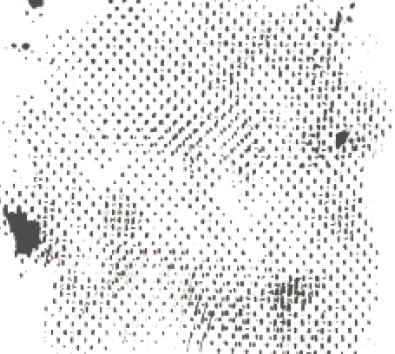
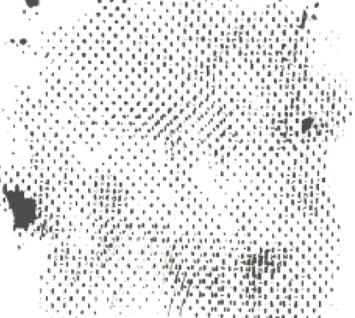

(1889 - 1930)
Movimentos e Organizações
1906
É realizado o I Congresso Operário Brasileiro, no qual foi aprovada a regulamentação do trabalho feminino.
1910
Formação do Partido Republicano Feminino por Leolinda Daltro e Gilka Machado, primeiro partido político liderado por mulheres. Por mais que ainda não fossem eleitoras nem elegíveis, suas motivações eram conscientizar a sociedade e batalhar pelos direitos femininos.

(1945 - 1964)
Movimentos e Organizações
1935
Nasce a União Feminina do Brasil, entidade política criada em defesa dos direitos econômicos, sociais, políticos e civis da mulher. Tornou-se clandestina no mesmo ano e muitas de suas dirigentes foram presas.
1949
É criada a Federação das Mulheres do Brasil (FMB), presidida por Alice Tibiriçá. Nesse ano, também passa-se a comemorar o 8 de Março como Dia das Mulheres no Brasil.
(1964 - 1985)
Movimentos e Organizações
1968
Com as muitas manifestações e protestos estudantis por parte dos jovens, mães se unem para a defesa de seus filhos por meio de organizações como a União Brasileira de Mães e o Clube das Mães.
1973
Surge o Movimento do Custo de Vida, um dos primeiros movimentos populares e de massas após o AI-5. Construído e dirigido por mulheres da periferia, seus principais protestos eram em relação ao alto custo de vida, salários baixos e necessidade de creche. Um dos abaixo-assinados elaborados por este grupo recebeu 1,3 milhões de assinaturas.
(1985 - presente)
Movimentos e Organizações
1985
É criado o Conselho Nacional dos Direitos da Mulher (CNDM) junto ao Ministério da Justiça, órgão composto por 17 conselheiras.
Sua presidente tinha status de Ministra.
★ Neste mesmo ano, foram eleitas 26 mulheres para a Câmara
dos Deputados de 16 estados brasileiros, de um total de 166 candidatas.
1987
Entrega da “Carta das Mulheres Brasileiras aos Constituintes”, elaborada pelo CNDM. Foi o documento mais completo e abrangente produzido na época, levantando diversas reivindicações, incluindo propostas para refrear a violência contra a mulher; ampliar o período de licença-maternidade; redefinir a penalização para abusos sexuais; e construir delegacias especializadas no atendimento à mulher em todos os municípios do território nacional. [...]